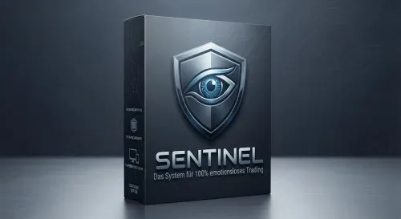

Optionsgewinne mit System: Wie jeder an der Börse mit Option
Produktprofil · Marktplatz-Daten 2026-10-13 · Verkaufsseiten-Recherche 2026-10-13 · Kategorien: Trading Products, Business & Investment, Education
- Optionsgewinne mit System: Wie jeder an der Börse mit Option ist ein/e Buch (gedruckt) in Trading Products und Business & Investment, vertrieben über den Digistore24-Marktplatz von Anbieter r2finance, gelistet seit 2020-02-24.
- Listenpreis $45.60; Digistore24 meldet 5 % Checkout-Konversion, 2.16 % Stornierungsquote und 20 % Affiliate-Provision.
- Verdienst pro Verkauf (Affiliate): $5.57 (Anbieter-seitige Statistik, keine Prognose).
Interesse an Optionsgewinne mit System: Wie jeder an der Börse mit Option? Aktueller Preis, Boni und Garantiebedingungen finden Sie auf der offiziellen Seite des Anbieters:
Offizielle Verkaufsseite ansehen
Affiliate-Link (Werbung) — wir verdienen ggf. eine Provision, ohne Mehrkosten für Sie.
Marktplatz-Daten
| Produkttyp | Buch (gedruckt) |
|---|---|
| Preis | $45.60 (Single payment) |
| Affiliate-Provision | 20 % |
| Garantie/Rückgabe | Laut Verkaufsseite des Anbieters — vor dem Kauf auf der offiziellen Seite prüfen |
| Anbieter | r2finance (gelistet seit 2020-02-24) |
| Marktplatz-Statistiken* | Checkout-Konversion 5 % · Stornoquote 2.16 % · Verdienst/Verkauf $5.57 |
* Anbieter-seitige Statistiken von Digistore24; sie hängen von der Traffic-Qualität ab und sind keine Prognose.
Marktplatz-Beschreibung des Anbieters
Mittlerweile begeistern sich in Deutschland immer mehr Anleger für Optionen und die Möglichkeiten, mit durchdachten Strategien das Risiko teilweise auszuschalten und planvoll Geld an der Börse zu verdienen. Für diesen Kreis legt Jens Rabe nun ein neues Buch vor: „Optionsgewinnen mit System“ vermittelt das grundlegende Wissen, das alle Anleger vor ihrem ersten Optionstrade verinnerlicht haben sollten, und stellt eine elementare Strategie vor, mit der Profis rund um den Globus ihr Geld verdienen. Die geschickte Kombination von Optionen und Dividenden ist für kundige Anleger bares Geld wert. In diesem Buch teilt Jens Rabe sein Wissen. Sein erstes Buch „Optionsstrategien für die Praxis“ gilt ebenfalls als das Standardwerk der Optionshändler. Der Bestseller erscheint inzwischen in der 4. Auflage.
Von der Verkaufsseite des Anbieters
Seitentitel: Buch kaufen - Optionsgewinne mit System
Hauptüberschrift
Buch kaufen
Abschnitts-Überschriften
- Optionsgewinne mit System: Wie jeder an der Börse mit Optionen Geld verdient
Einstiegstext
Buch kaufen raphaelschulz 2020-03-25T16:33:06+01:00 Optionsgewinne mit System: Wie jeder an der Börse mit Optionen Geld verdient
CTA-Buttons: „Startseite"
Recherche-Methode: rohes HTML · 199 Wörter · Qualität: medium · recherchiert am 2026-10-13. Vollständige Recherche-Datei (MD) ↗
Wie Produkte dieser Art geliefert werden
Allgemeiner Hinweis zu diesem Produkttyp (keine anbieterspezifische Anleitung): Gedruckte Bücher werden physisch versandt; Lieferzeit hängt von Ihrer Region ab und wird im Checkout angezeigt. Für die genaue Anwendung von Optionsgewinne mit System: Wie jeder an der Börse mit Option sind die offizielle Verkaufsseite und die enthaltenen Materialien maßgeblich.
Gut zu wissen
- Keine Garantie-Formulierung in unserer Recherche gefunden — bestätigen Sie das Rückgabefenster auf der offiziellen Seite, bevor Sie kaufen.
- Marktplatz-Zahlen (Preis, Provision, Konversion, Stornoquote) — Quelle: offizielle Digistore24-Marktplatz-API (Affiliate-Sicht), Stand 2026-10-13. Gegenprüfung: Marktplatz-Suche nach Produkt-ID 309523.
- Verkaufsseiten-Zitate — Quelle: https://duo-strategie.com/buch-kaufen/, abgerufen 2026-10-13 (Methode: rohes HTML). Verify: offizielle Seite öffnen.
- Garantie / Rückgabe — vom Anbieter festgelegt; vor dem Kauf auf der Verkaufsseite bestätigen.
- Nicht von uns geprüft: Produktqualität, Ergebnisse, Testimonials — kein Praxistest für dieses Listing durchgeführt.
Häufige Fragen zu Optionsgewinne mit System: Wie jeder an der Börse mit Option
Antworten aus dem Marktplatz-Snapshot (2026-10-13) und der Verkaufsseiten-Recherche (2026-10-13); Anbieteraussagen sind inline gekennzeichnet.
Was ist Optionsgewinne mit System: Wie jeder an der Börse mit Option?
Optionsgewinne mit System: Wie jeder an der Börse mit Option ist ein Angebot des Typs „Buch (gedruckt)" im Digistore24-Marktplatz, Anbieter: r2finance, gelistet seit 2020-02-24. Eingepflegt unter Handelsprodukte und Business & Investment. Digistore24 wickelt Checkout, Lieferung und Rückgaben ab.
Wie viel kostet Optionsgewinne mit System: Wie jeder an der Börse mit Option?
Der Digistore24-Marktplatz listet es für $45.60 (single payment). Preise legt der Anbieter fest und können sich ändern — der Marktplatz-Eintrag oben zeigt den Schnappschuss; die offizielle Verkaufsseite zeigt den aktuellen Preis.
Gibt es eine Geld-zurück-Garantie für Optionsgewinne mit System: Wie jeder an der Börse mit Option?
Unsere Verkaufsseiten-Recherche hat keine explizite Garantie-Formulierung gefunden. Viele Digistore24-Produkte bieten 60 Tage Geld-zurück, aber das legt jeder Anbieter selbst fest — bestätigen Sie es auf der offiziellen Verkaufsseite, bevor Sie kaufen.
Ist Optionsgewinne mit System: Wie jeder an der Börse mit Option seriös?
Wir bewerten keine Seriosität — wir veröffentlichen überprüfbare Zahlen: Anbieter r2finance (gelistet seit 2020-02-24), Checkout-Konversion 5 %, Stornoquote 2.16 %, Affiliate-Verdienst/Verkauf $5.57 (alles Anbieter-seitige Marktplatz-Statistiken). Lesen Sie unsere 6-Punkte-Bewertungsmethode und entscheiden Sie anhand der Zahlen — oder diskutieren Sie Optionsgewinne mit System: Wie jeder an der Börse mit Option auf GitHub.
Wo kann ich Optionsgewinne mit System: Wie jeder an der Börse mit Option sicher kaufen?
Nur über die offizielle Verkaufsseite, die auf dieser Seite verlinkt ist (Checkout und Rückgaben laufen über Digistore24). Prüfen Sie dort Preis und Garantie vor der Bestellung. Der Link ist ein Affiliate-Link — der Kauf unterstützt diese Website ohne Mehrkosten für Sie.
Wie erhalte ich Optionsgewinne mit System: Wie jeder an der Börse mit Option nach der Zahlung?
Der Checkout läuft über Digistore24: Nach der Zahlung erhalten Sie Ihren Zugang oder Download per E-Mail und in Ihrem Digistore24-Kundenkonto. Lieferdetails für diesen Produkttyp: Gedruckte Bücher werden physisch versandt; Lieferzeit hängt von Ihrer Region ab und wird im Checkout angezeigt. Bei Problemen kann der Digistore24-Käufersupport Ihre Bestellung wiederherstellen.
Alle 50 Käuferfragen zu Handelsprodukte — das komplette Kategorie-FAQ.
Optionsgewinne mit System: Wie jeder an der Börse mit Option auf Reddit diskutieren
In Community-Threads vergleichen echte Käufer Erfahrungen. Wir verlinken Communities, keine einzelnen Posts — Threads verschwinden, Subreddits bleiben:
- r/Finanzen — deutschsprachige Community mit Diskussionen zu trading products.
- Reddit-Suche nach „Optionsgewinne mit System: Wie jeder an der Börse mit Option" — Live-Ergebnisse, von uns nicht beeinflusst.
- Top-„Erfahrungs"-Treffer dieses Jahr — selbst nach Aktualität filtern.
Passendes auf Amazon.de
Physische Produkte und Zubehör, die häufig zusammen mit Optionsgewinne mit System: Wie jeder an der Börse mit Option gekauft werden:
- Marketing Bücher auf Amazon.de — Top-Ergebnisse, Amazon-Ranking.
- Bestseller: Marketing Bücher — live Liste von Amazon, von uns nicht kuratiert.
Werbung: Als Amazon-Partner verdient DigistorePicks DE an qualifizierten Käufen (Partner-tag adminstorede-21). Amazon setzt eigene Preise und Provisionen (niedrige einstellige Prozente — weit unter den 30–75% der Digistore24-Anbieter). Amazon ist ein Convenience-Angebot für Sachprodukte, kein Ersatz für das digitale Produkt oben.
Ähnliche Angebote in Handelsprodukte

Unsere Plattform Affiliateking.net – nutze sie, um zusätzlich zu den Provisionen saftige Zusatzeinnahmen zu kassieren. Hier direkt zur Partnerseite + Werbemitte

Bundle aus mehreren Produkten zum Thema sichere Optionsstrategien. Als Affiliate bewirbst Du ein zentrales Thema – der Kunde durchläuft einen mehrstufigen Conve

TOP-Dauereinkommen! DIE Ausbildung zur Neuen Geldordnung (NGO) und zum Krypto-Handel für den Master - Gewinn am Krypto-Markt. Deine Vorteile als Affiliate: hoch

Vermittle die aktuell schnellste & sicherste (Day)Trader Ausbildung, die im deutschsprachigen Raum angeboten wird. Extrem hohe Nachfrage! Darum wählen unser
Weitere Angebote von r2finance
Optionsgewinne mit System: Wie jeder an der Börse mit Option ist auch gelistet in
Business & Investment (606 Produkte) · Bildung (597 Produkte)
Ähnliche Preislage in Handelsprodukte
MomentumOS ist ein digitales PDF-Dokument (ca. 30 Seiten) das dein regelbasiertes Trading-System vollständig beschreibt — von der Score-Berechnung über Kauf- un

Im Grunde weiß es jeder: Ohne mentale Stärke wird kein Trader jemals erfolgreich! Die Kontrolle von Angst & Gier, das disziplinierte Einhalten des Tradingpl

Schluss mit emotionalem Kapitalverlust. Über 90 % aller Trader scheitern nicht an den Märkten, sondern an ihrem eigenen Ego – Rache-Trades, FOMO und mangelnde D
Ähnliche Suchanfragen
Wo Sie es sich ansehen können
Wo Sie es sich ansehen können
Aktuelle Preise, Garantie und Boni finden Sie auf der offiziellen Verkaufsseite:
Offizielle Verkaufsseite ansehen
Das ist ein Affiliate-Link (Werbung) — kaufen Sie darüber, verdienen wir ggf. eine Provision, ohne Mehrkosten für Sie.
Quellen & weiterführende Informationen
- Offizielle Verkaufsseite (aktueller Preis, Garantie, Boni): duo-strategie.com/buch-kaufen/ (Affiliate-Link)
- Öffentliche Digistore24-Produktseite: digistore24.com/product/309523
- Vollständige Recherche-Datei (Markdown, versioniert): content/products/48800-optionsgewinne-mit-system-wie-jeder-an-der-b-rse-mit-option.md
- Marktplatz-Kategorie: Handelsprodukte
Wie wir Produkte wie Optionsgewinne mit System: Wie jeder an der Börse mit Option bewerten
Sechs Prüfungen, ausschließlich mit offiziellen Marktplatz-Zahlen. Die vollständige Bewertungsmethode lesen · unsere Recherche-Standards & Kennzeichnung.
Fragen oder eigene Erfahrungen mit Optionsgewinne mit System: Wie jeder an der Börse mit Option?
Praxis-Tests veröffentlichen wir erst, nachdem wir ein Produkt selbst gekauft haben — aber Ihre Erfahrung hilft anderen Lesern: Diskussion zu Optionsgewinne mit System: Wie jeder an der Börse mit Option auf GitHub starten/verfolgen. Falsche Zahl gefunden? Korrektur melden — jede Seite zeigt ihre Datenstände, Korrekturen gelten für die ganze Website.